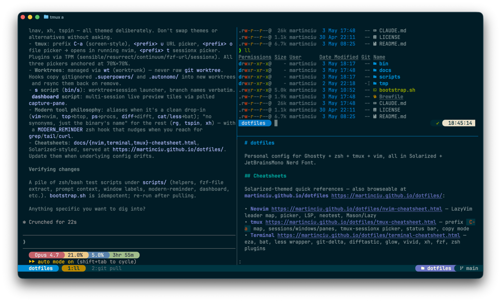

eza | ls replacement with icons + git status |
bat | syntax-highlighted cat / man pager backend |
git-delta | git diff/log/blame pager |
difftastic | syntactic diff for ad-hoc compares (non-git) |
hunk | review-first diff TUI for whole changesets (explicit invocation) |
glow | render markdown to ANSI (powers md) |
vivid | generates LS_COLORS palettes |
procs | modern ps replacement (Rust) |
tailspin | live-log highlighter (tspin); Solarized via ~/.config/tailspin/theme.toml |
lnav | TUI log navigator; Solarized via built-in theme (see lnav section) |
btop | modern top replacement; follows theme-set (10 themes, restart tier) |
ctop | top-like container-metrics TUI (CPU/mem/net/IO; enter expands one; needs Docker daemon; raw, no alias) |
gh dash | GitHub TUI for PRs/issues/notifications (ghd abbr); Solarized via ~/.config/gh-dash/config.yml — ? help, s/S next/prev section, j/k rows, enter preview, o open in browser, r refresh, / filter, q quit |
dua | interactive disk-usage analyzer with TUI deleter (dua i; raw, no alias) |
duf | modern df replacement (grouped, color-coded; raw, no alias) |
dust | tree-style du replacement (largest-first, bar graphs; raw, no alias) |
xh | modern HTTP client (HTTPie-compatible CLI); Solarized via ~/.config/xh/config.json |
fzf | fuzzy finder + Ctrl-R / Ctrl-T bindings |
theme-set <name> (10 themes; see Themes & fonts). Don't introduce tool alternatives (exa, lsd, diff-so-fancy, delta for non-git, …) without asking.vivid generate solarized-dark, bat --theme="Solarized (dark)", delta.syntax-theme = "Solarized (dark)" (each theme ships its own pins).font-set (17 Nerd Fonts). Any Nerd Font satisfies eza --icons.cat | → bat --paging=never |
less | function → bat wrapper (file = full decoration; pipe = --plain) |
md | → glow --style ~/.config/glow/glamour.json --width $COLUMNS (fish fn; wraps to pane width) |
mdp | → md -p (paged via $PAGER) |
ls | → eza --group-directories-first --icons |
ll | → eza -lh --git --icons --group-directories-first |
la | → ll -a |
vim / vimdiff | → nvim (guarded on command -v nvim) |
vi | → command vim (legacy minimal vim, suppresses recursive alias) |
ps | → procs (Solarized; PID asc; ps-like columns) |
psh | → procs --load-config ~/.config/procs/procs-heavy.toml (CPU desc, trimmed) |
top | → btop (modern colorful TUI, follows theme-set; command top for BSD top) |
BSD \ls still works (escape skips alias) and uses OMZ's default LSCOLORS. Use command less to reach real less for less +F, -R, etc. command ps / \ps / /bin/ps reach legacy ps.
eza | simple list (icons via alias) |
eza -l | long form |
eza -lh | long + human sizes |
eza -la | show hidden |
eza --git | add a git-status column |
eza --tree -L 2 | tree view, depth 2 |
eza -s modified | sort by mtime |
eza -s size | sort by size |
eza --group-directories-first | dirs on top (default in alias) |
ll -s modified -r | most recently changed first |
ll --git-ignore | hide gitignored files |
eza -laT --git-ignore -L 3 | tree, hidden, no gitignored, 3 deep |
eza -l --time-style=long-iso | ISO timestamps |
Colors come from LS_COLORS (set by vivid). Icons need a Nerd Font in your terminal.
procs | all your processes, Solarized columns, sort by PID |
procs fish | regex search across PID/User/Command (replaces ps | grep) |
procs --tree | parent/child tree view |
procs --watch | refresh every 1s; --watch-interval N for custom |
procs --sortd UsageCpu | sort by CPU descending (asc = --sorta) |
procs --insert VmRss | add a column on the fly (kinds: procs --list) |
ps | → procs (default Solarized view) |
psh | → procs --load-config ~/.config/procs/procs-heavy.toml (CPU desc, trimmed) |
~/.config/procs/procs.toml | default config (in-repo, symlinked) |
~/.config/procs/procs-heavy.toml | trimmed columns + CPU-desc; loaded by psh |
Both TOMLs duplicate their [style.*] blocks; procs --load-config replaces the whole config (no inheritance). Edit both when tweaking colors.
procs on macOS only shows your own processes — Apple gates
cross-user visibility behind elevated privileges. To see system daemons (the
_appstore, _audiomxd, etc. that ps -ax shows), fall through to legacy:
\ps -ax or command ps -ax.
Pipes strip color (color_mode = "Auto"). Prefer procs <pat> over ps | grep <pat> — same result, colors preserved.
lnav file.log | open one file (auto-tails new lines) |
lnav dir/ | open every log file in a directory; merged by timestamp |
cmd | lnav | read from stdin (no positional arg) |
lnav -n file.log | headless / no UI (useful for format debugging) |
~/.config/lnav/configs/installed/solarized-dark.json | activates lnav's built-in Solarized Dark theme |
~/.config/lnav/formats/installed/inngest.json | JSON format for inngest-cli dev stdout |
~/.config/lnav/config.json | lnav's runtime mutable config (not in repo) |
Add new formats by dropping a JSON file in formats/installed/ — the installed/ dir is symlinked from the repo, so no bootstrap.sh re-run is needed. (lnav owns the rest of ~/.config/lnav/.) Theme is lnav's built-in (palette matches bat / delta / procs / btop); we don't redefine slots.
| q | quit |
| e / E | next / prev error |
| w / W | next / prev warning |
| /pat / n | search / next match |
| : | command prompt (e.g. :filter-in, :goto) |
| ; | SQL prompt — query log lines as a table (e.g. SELECT * FROM inngest_dev WHERE level = 'error') |
| t / i | time histogram / global histogram view |
| TAB | switch between log view and bottom prompt |
Bottom status bar shows the matched format name (e.g. inngest_dev) when an installed format matches the file.
cat file.rb | aliased to bat --paging=never |
bat file.rb | paged, with line numbers + git gutter |
bat -p file | plain (no decoration) |
bat -A file | show non-printables (whitespace, line endings) |
bat -r 10:50 file | range lines 10–50 |
bat -l json data | force language |
bat --diff file | only show modified hunks |
man <cmd> | uses bat -l man via $MANPAGER |
bat --list-themes | all themes |
bat --list-languages | supported languages |
bat --theme="Solarized (dark)" | force theme |
$BAT_THEME | env override |
$MANPAGER is set so man stays Solarized: sh -c 'col -bx | bat -l man -p --paging=always'. $MANROFFOPT=-c keeps ANSI sequences intact.
| Space / b | page down / up |
| /pat / n | search / next match |
| g / G | top / bottom |
| q | quit |
bat shells out to less by default — these are less keys.
less is a fish function (in .config/fish/functions/less.fish)
that delegates to bat. File arguments get bat's full
decoration (line numbers, git gutter); piped input falls back to bat --plain
so cmd | less doesn't get bat's STDIN header and stays clean.
$PAGER is not set to bat globally — git/delta
and other tools manage their own pagers. The wrapper only shadows interactive
less use.
less file.rb | bat with full decoration (paged) |
cat file | less | bat --plain (no header) |
command less +F log | real less follow-mode |
command less -R | real less raw control chars |
Inside the pager, all less keys work (Space/b, /pat, g/G, q) — bat shells out to less.
Wired through git config — anything that paginates a diff uses delta:
git diff | side-by-side or unified, syntax-highlighted |
git log -p | commit-by-commit diff |
git show <rev> | single commit |
git blame | styled blame |
git add -p | interactive — uses delta as the diff filter |
| n / N | next / prev file (navigate=true) |
| / / ? | search |
| Space / b | page down / up |
| q | quit |
Built on less, so less keys all work.
git diff --side-by-side | two-column layout |
delta --light | force light theme one-shot |
delta --no-gitconfig --diff-highlight | minimal preview |
git -c core.pager=cat diff | bypass delta one-shot |
Aliased over diff for ad-hoc file compares outside git. Git diffs still flow through delta (see above) — the two cover different surfaces.
diff a b | syntactic, language-aware diff between two files |
diff a/ b/ | recursive directory diff |
diff old.json new.json | tree-sitter parses each side; structural moves are recognized |
diffcommand diff a b | skip the alias (/usr/bin/diff) |
\diff a b | same; backslash quotes the alias name |
/usr/bin/diff a b | absolute path bypasses $PATH |
Non-interactive shells (scripts, Make, CI) never see the alias — fish aliases don't propagate to non-interactive shells.
Difftastic uses ANSI 16-color directly; it inherits the active terminal palette (Solarized Dark by default), so it auto-adapts with theme-set — nothing to wire.
Don't introduce delta, diff-so-fancy, or another diff renderer for non-git — they're line-based, not syntactic, and would duplicate what delta already does for git.
hunk diff | working-tree review: file sidebar, one stream, hunk-to-hunk jumps |
hunk show HEAD~1 | review a commit |
t | ad-hoc theme picker (preview only — theme-set owns the config) |
Explicit invocation only — git diff / git log -p stay on delta; hunk is the deliberate whole-changeset pass.
hunk session list | live sessions (loopback daemon) |
hunk session review --repo . --json | machine-readable review state |
hunk session comment add … | note renders inline above the hunk it annotates |
Claude Code loads the bundled hunk-review skill — bootstrap symlinks it into ~/.claude/skills/ through /opt/homebrew/opt/hunk (survives brew upgrade).
Follows theme-set across all 10 themes incl. Latte. Generated ~/.config/hunk/config.toml = config-base.toml + theme-<slug>.toml (fragment last). Restart tier — relaunch to repaint.
md function
md (a fish function, functions/md.fish) renders markdown to
ANSI via glow with a pinned Solarized style, word-wrapped to the
current terminal/pane width:
function md glow --style $HOME/.config/glow/glamour.json --width $COLUMNS $argv end
glow reads the width once at launch (one-shot and pager modes render then exit),
so the wrap reflects the pane size at the moment md runs — resize and
re-run to re-flow. Piped output drops --width (glow.yml default) so
redirected renders stay deterministic. bat / less /
cat still show the source with syntax highlighting; md
shows the rendered output (headings, lists, code-block themes).
--style, not glow.yml
glow on macOS reads its yaml from ~/Library/Preferences/glow/, not
~/.config/glow/. The function passes --style directly so the
Solarized JSON in this repo (.config/glow/glamour.json) is used regardless.
Fenced code blocks inside markdown use chroma's solarized-dark theme to
stay on-palette.
md README.md | render to terminal |
md -p README.md | paged (uses $PAGER / less) |
mdp README.md | same as md -p (dedicated alias) |
spec-last / plan-last | open the newest .superpowers/specs|plans doc via mdp (creation-time sort; run from repo root) |
md -w 100 README.md | override width (later flag wins) |
cat foo.md | md - | render from stdin |
command glow ... | bypass md (no --style/width) |
Don't swap to mdcat / frogmouth without an explicit ask — mdcat was archived upstream 2025-01-10.
tspin file.log | open file (paged via less) |
tspin -f file.log | follow (live tail with highlights) |
cmd | tspin -p | pipe stdin, print to stdout (no pager) |
tspin -e 'kubectl logs -f pod' | run command, view paged output |
No tail alias and no t shortcut — tail / tail -n stay vanilla. tspin's CLI isn't a tail superset (no -n), so wrapping tail would break common uses.
theme.toml
tspin reads ~/.config/tailspin/theme.toml. It accepts ANSI color
names only (red, blue, bright_red, …);
Ghostty's Solarized Dark palette resolves them to hex via the canonical
Solarized terminal mapping:
red | red #dc322f |
bright_red | orange #cb4b16 |
bright_magenta | violet #6c71c4 |
bright_green | base01 #586e75 |
bright_cyan | base1 #93a1a1 |
Severity (error / warn / info / debug) is shipped as [[keywords]] blocks. tspin 7 has built-ins for these, but our additive entries take precedence and remap them onto Solarized accents.
Schema: tspin --generate-default-theme prints every valid key. Unknown keys are a hard parse error, so re-check the section names after a tspin major bump (7.0 renamed [numbers].number → .style and [ip_addresses] → [ipv4]). Override anything with extra [[keywords]] or block-level entries.
xh GET httpbin.org/get | basic GET; pretty-prints JSON in Solarized colors |
xh POST httpbin.org/post name=alice | JSON body via key=value shorthand (no --data) |
xh -a user:pass api.example.com | basic auth (HTTPie-compatible flag) |
xh --download url | save body to a file (filename inferred) |
xhs api.github.com/zen | HTTPS-default companion binary (no https:// needed) |
xh --style=monokai GET … | override the default Solarized theme per-invocation |
Solarized is pinned via ~/.config/xh/config.json:
{"default_options": ["--style=solarized"]}
xh --style accepts auto, solarized, monokai,
fruity. xh renders through syntect — the same library family as
bat — so highlighting matches the rest of the Solarized Dark setup.
No alias here. Aliases in this repo are reserved for swapping commands; default flags belong in config files.
curl
curl is unchanged. Scripts, CI, and any non-interactive use keep calling
curl verbatim. xh/xhs are the interactive surface only.
Don't alias curl to xh, and don't introduce an http/https alias either — the binary's own name is the only entry point.
basalt | standalone TUI for the Obsidian vault (~/code/notes) — browse & read notes in a bare terminal, works over SSH; same .md files as the app |
| install | mise github:erikjuhani/basalt, prebuilt binary (tag_regex pins the TUI crate — the repo also tags basalt-core); no brew, no Rust toolchain |
| config | none shipped — raw defaults; colors ride the ANSI palette, so theme-set applies for free. Dataview/.base views stay in the Obsidian app |
| ? | help modal — live keymap for the current pane |
| j / k / Enter | move / open (vault splash & note explorer) |
| t | toggle explorer sidebar |
| Tab | switch pane |
| Ctrl+o | toggle outline pane |
| Ctrl+g | vault selector |
| Ctrl+Alt+e | edit note in vi (in-TUI editing is experimental, off) |
| Ctrl+Alt+o | open note in the Obsidian app |
| q | quit |
slm <prompt words> | one-off completion from args |
cat file | slm | prompt from stdin |
cat err.log | slm explain this | args = instruction, stdin = material (joined) |
slm -m <id> … | override model for this call |
slm -s "translate to French" … | set the system prompt |
slm -h | help |
SLM_URL | base URL (default http://localhost:1234/v1) |
SLM_MODEL | default model (qwen/qwen3.5-9b); persist via set -Ux |
SLM_SYSTEM | default system prompt (terse built-in otherwise) |
SLM_MAX_TOKENS | completion token cap (default 512) |
Talks to LM Studio's OpenAI-compatible endpoint via curl (keyless). Pins reasoning_effort: "none" + a token cap so qwen's thinking can't run away. Server isn't always-on — start the LM Studio app (or lms server start). 9B model: quick & local, not authoritative.
| Command | What it does |
|---|---|
hyperfine 'cmd' | 10 runs, no warmup, summary with mean/stddev |
hyperfine --warmup 3 'cmd' | discard 3 warmup runs first (cache, JIT) |
hyperfine 'a' 'b' | A/B compare; prints "X is N× faster than Y" |
hyperfine -N 'cmd' | skip shell wrapper; measure binary directly |
hyperfine --export-markdown out.md 'cmd' | share results in markdown |
time
time (/usr/bin/time) is the right tool for
one-shot wall-clock measurements — scripts, CI, "did this finish quickly?".
Reach for hyperfine when you want warmups, multiple runs, variance
characterization, or A/B comparison.
Deliberately not aliased to time — semantics differ. See
CLAUDE.md for the catalog-rejection rationale.
First run includes filesystem cold-cache effects. Use --warmup N
or --prepare 'sync' to control. macOS purge needs
sudo if you want to flush page cache between runs.
vivid generates a LS_COLORS string from a named palette. .config/fish/conf.d/10-colors.fish exports it on startup:
command -v vivid >/dev/null 2>&1 && \ export LS_COLORS="$(vivid generate solarized-dark)"
Both eza and GNU ls read $LS_COLORS. BSD ls uses $LSCOLORS (different format) — left at OMZ default.
vivid themes | list available palettes |
vivid generate molokai | try another palette one-shot |
echo $LS_COLORS | tr ':' '\n' | inspect current rules |
vivid -m 8-bit generate solarized-dark | 256-color mode (24-bit is default) |
Solarized-dark is the pinned palette — switching is OK to try, but persist anything else only after asking.
| Ctrl-R | atuin history picker — full screen-aware popup with scope cycling |
| Up | fish native history-search (atuin's up-arrow binding disabled via --disable-up-arrow) |
Cycle scope inside the picker with Ctrl-R: global → session → workspace. Default scope is global (every command in reach without cycling); workspace is the current git repo (skipped outside a repo).
| Enter | paste selected command to commandline (does not run) |
| Tab | run selected command immediately |
| Ctrl-R | cycle scope (global → session → workspace) |
| Ctrl-S | toggle exact / fuzzy match |
| Ctrl-N / Ctrl-P | next / prev match (arrows work too) |
| Esc | return typed query to the prompt (exit_mode = "return-query"); Ctrl+C / Ctrl+D discard |
cwd:. | filter syntax — restrict to current directory |
| exit code | fixed-position column between datetime and command — raw integer (-1 = "completion never recorded"; 0 = success; anything else = the actual exit code), coloured green/red |
~/.local/share/atuin/history.db | sqlite store; machine-global, outside the repo |
fish_history | still recorded in parallel; revert by deleting 45-atuin.fish |
atuin import fish | one-time backfill from existing fish history |
Config in .config/atuin/config.toml. Theme is default — auto-adapts to whatever Ghostty's 16-color palette is via ANSI refs, same trick as FZF_DEFAULT_OPTS.
| Ctrl-R | REPLACED by atuin — fzf no longer owns Ctrl-R |
| Ctrl-T | file picker → inserts paths at the cursor |
| Alt-C | cd into directory under cursor (left-Option in Ghostty; right-Option still types Polish) |
Tab-complete works through fzf for kill **<Tab>, cd **<Tab>, ssh **<Tab>, etc.
| Ctrl-J / Ctrl-K | next / prev item |
| Tab / Shift-Tab | multi-select |
| Enter | accept |
| Esc / Ctrl-C | cancel |
'foo | exact match (single-quote prefix) |
!foo | negate |
^foo / foo$ | prefix / suffix anchor |
foo | bar | OR |
vim $(fzf) | pick a file, open in vim |
git checkout $(git branch | fzf) | branch picker |
fd | fzf --preview 'bat --color=always {}' | live preview |
history | fzf | manual history search |
FZF colors are pinned to Solarized via set -gx FZF_DEFAULT_OPTS in .config/fish/conf.d/40-plugins.fish.
theme-set <name> (fish function) flips a machine-local
active-theme symlink and re-themes every hot-path + file-viewer tool live.
Solarized Dark is the bootstrap default.
theme-set solarized | Solarized Dark (default) |
theme-set mocha / frappe / latte | Catppuccin Mocha / Frappé / Latte (Latte = only light theme) |
theme-set dracula | Dracula |
theme-set gruvbox | Gruvbox |
theme-set tokyo-night | Tokyo Night Storm |
theme-set nord | Nord |
theme-set rose-pine / rose-pine-moon | Rosé Pine / Moon |
theme-set | show current theme + when it was set |
theme-set --stats [--all] | per-theme usage report (active time, %, switch count, last set) |
10 themes total. The switch is live — open terminals, tmux, and nvim follow on next prompt / reload.
font-set <name> [<weight>] [<size>] flips a machine-local
Ghostty font include; ghostty +reload applies it live. JetBrains
Mono is the bootstrap default.
font-set jetbrains | default family |
font-set <name> bold | also set weight (per-font advertised weights) |
font-set <name> "" 15 | keep weight, set size 15 |
font-set <Tab> | completion lists all 17 Nerd Fonts |
font-set | show current font (family + weight + size) + when set |
font-set --stats [--all] | per-font usage report |
17 switchable Nerd Fonts. Omit weight/size to keep the current value. No tmux/nvim/bat coupling — font is Ghostty-only.
Follow theme-set: bat, git-delta, difftastic, glow/md, vivid/LS_COLORS, eza, fzf, atuin, Ghostty, starship, lnav, gh-dash, tmux, nvim, btop, hunk.
Stay Solarized Dark: procs, tailspin (tspin), xh.
fzf + atuin + difftastic auto-adapt via ANSI palette refs (no per-theme file). tmux sources the active palette; nvim reads it at startup. See CLAUDE.md → "Switchable themes".
moshi-theme (fish function) exports a theme to the
Moshi iPhone terminal as a
Moshi-v1 payload. No args = the active theme-set theme.
moshi-theme | active theme → tappable moshi:// deep link + moshi-theme:… string on the clipboard |
moshi-theme <name> | any of the 10 themes (Tab-completes) |
moshi-theme --qr | scannable QR in the terminal (phone camera → Moshi import) |
Import is manual on the phone (Settings → Theme → Import theme). Payloads are committed moshi-<slug>.json artifacts — re-run scripts/build-moshi-themes.py after theme changes (needs Ghostty.app).
nvimpager is the global $PAGER (set in
.config/fish/conf.d/00-env.fish, guarded on
command -q nvimpager). Anything that paginates through
$PAGER gets smooth, colored, theme-following paging — e.g.
glow's markdown ANSI or --help piped to a pager.
man ($MANPAGER = bat) and git (core.pager = delta) keep their own pagers — nvimpager only owns the generic $PAGER slot.
nvimpager loads its own ~/.config/nvimpager/init.lua
— not the full nvim config. It reuses nvim's lazy
snacks.nvim for smooth scroll (existence-guarded, so a fresh
machine still pages without animation) and applies the active
theme-set colorscheme.
cmd | nvimpager | page any stdin (colored) |
| q | quit (nvim normal-mode keys inside) |
| /pat / n | search / next match |
Smoke: scripts/test-nvimpager.sh.
sandbox (bin/sandbox, Mac-side) runs untrusted
CLI/TUI inside an isolated Linux container that bakes the portable
dotfiles subset. Use it to try a sketchy tool, an npx one-off,
or an AI agent without exposing the Mac home.
sandbox create <name> | provision a new sandbox |
sandbox <name> | attach to an existing one (errors if absent) |
sandbox reup <name> [flags] | recreate with new flags, keep the volume |
| container | no host mounts — untrusted-safe; rebuilds on content-hash mismatch |
| machine | OrbStack mounts the Mac home — trusted only |
Active Mac theme is baked in and re-applied on entry. Secrets are injected at runtime, never baked. The build needs GITHUB_TOKEN.
Bakes the Brewfile minus tmux/ruby/procs, plus wt. In-container theme switcher, tmux, sesh, gh, bd, font-set, vhs are out of scope. nvimpager is the one non-mise tool (built from source on Linux).
Smoke: scripts/test-sandbox.sh (also CI: .github/workflows/sandbox.yml, arm64).
vhs (Brewfile) renders a scripted terminal session to
GIF/WebM from a .tape file — deterministic terminal demos
without screen-recording by hand.
vhs demo.tape | render a tape to its output files |
vhs new demo.tape | scaffold a starter tape |
vhs record > demo.tape | capture keystrokes into a tape |
Tape sources live in docs/tapes/<name>.tape; outputs
(.gif + .webm) are written alongside and committed.
Build all via scripts/build-tapes.sh.
Recording env (theme/font/size) is locked at the top of each tape — vhs spawns its own ttyd, not Ghostty, so it doesn't inherit your live theme-set / font-set choice.
Full new-machine setup is in README.md → "Setup (new machine)". The steps below are the terminal-relevant subset.
# 1) Brew packages brew bundle --file=$PROJECTS_HOME/dotfiles/Brewfile # 2) Symlinks (idempotent) $PROJECTS_HOME/dotfiles/bootstrap.sh # 3) Wire delta into git (one-time, global) git config --global core.pager delta git config --global interactive.diffFilter "delta --color-only" git config --global delta.navigate true git config --global delta.line-numbers true git config --global delta.syntax-theme "Solarized (dark)" # 4) Verify brew bundle check --file=$PROJECTS_HOME/dotfiles/Brewfile --verbose echo $LS_COLORS | head -c 80 # should not be empty git log -p | head # should look styled